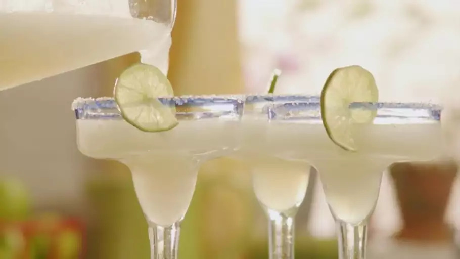

Frozen Margaritas

An easy twist on a classic margarita cocktail!
This frozen margarita recipe is easy to make with frozen limeade concentrate, tequila, triple sec, and crushed ice.
Ingredients
- 4 cups crushed ice, or as needed
- 1 (6 ounce) can frozen limeade concentrate
- 6 fluid ounces tequila
- 2 fluid ounces triple sec
Directions
- Fill blender with crushed ice.
- Pour in limeade concentrate, tequila, and triple sec.
- Blend until smooth.
- Pour into glasses and serve.